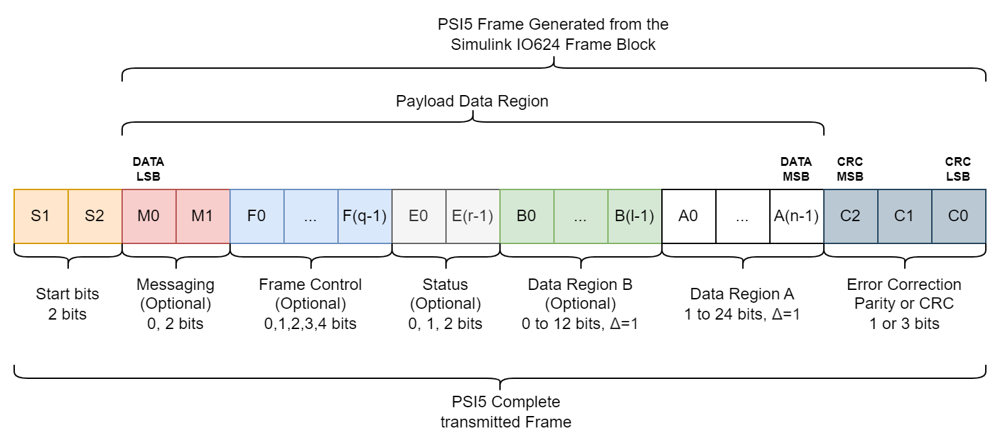

IO624 - Frame — Constructs the payload and calculates the CRC
Use this block to easily construct the PSI5 frame. This block places the different configuration and data fields (Payload) in the correct order in the PSI5 frame, calculates automatically the CRC and concatenates it in the correct way.
Here a reminder of how a PSI5 Frame is constructed.

The Input Ports and the Options in the Mask represent the Payload Data Region, and the Output Port provides the complete PSI5 frame, minus the Start bits, which are generated automatically by the Setup Block. For the moment the Parity bit option is not available, only the CRC.
This is a mandatory field in the Frame. If left unconnected it will be replaced by an equal number of Size of DataA in zeros.
Data Type:
uint32
This is an optional field in the Frame. If left unconnected it will be replaced by an equal number of Size of DataB in zeros.
Data Type:
uint16
This port outputs the constructed PSI5 Frame with all the options and Fields selected by the user, except the Start bits.
Data Type:
uint32
Mandatory field. Defines the length in bits of the Data Region A. It must be greater or equal to 1, and lower or equal to 24.
Optional field. Defines the length in bits of the Data Region B. It must be greater or equal to 0, and lower or equal to 12. If it is set to 0 the DataB Port will be ignored.
Activate the use of Messaging in the PSI5 Frame.
Optional field. If used, declare a vector [LSB, ..., MSB] of 2 bits. These bits are for Serial messaging.
Activate the use of Frame Control in the PSI5 Frame.
Optional field. If used, declare a vector [LSB, ..., MSB] of 1 to 4 bits. These bits specify either the frame data type, data content, or sensor identification.
Activate the use of Status in the PSI5 Frame.
Optional field. If used, declare a vector [LSB, ..., MSB] of 1 or 2 bits. These bits are reserved for Error flags.